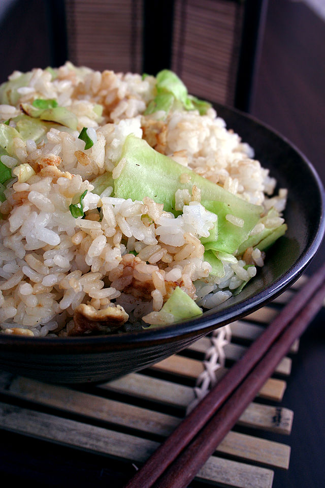

Fried Rice

A picture of delicious fried rice.
Fried rice is an ancient dish that has always satisfied those who have tried it.
Nobody knows exactly who the genius to invent fried rice was, but they have
probably have their own dedicated section in the afterlife.
Ingredients
- 4 teaspoons canola oil
- 2 eggs, beaten
- 2 carrots, chopped
- salt and black pepper
- 3 cloves garlic, crushed
- 1 cup frozen peas
- 4 scallions, minced
- 4 cups cooked rice
- soy sauce to taste
Steps
- Heat a wok or large skillet over high heat; add 1 teaspoon canola oil. Cook and stir eggs in
the hot oil until scrambled and set, 3 to 4 minutes. Transfer eggs to a plate, clean the wok,
and return to high heat.
-
Mix 1 tablespoon canola oil, carrots, and salt in the hot wok; cook and stir for 2 minutes.
Add garlic to carrots; cook and stir until garlic is fragrant and browned, about 2 minutes.
Stir peas and scallions into carrot mixture; cook and stir until peas are warmed, 1 to 2 minutes. Lower heat to medium.
-
Stir rice into carrot mixture; add scrambled eggs, soy sauce, salt, and pepper.
Cook and stir rice mixture until heated through, 2 to 3 minutes.
Click here to return to the home page!